This portfolio follows the design experiments and documentation of a client design project for Tim Loftus' Boat Building.
I chose Tim Loftus Boat Building out of three options for the client design project, the others were for an invasive plant company, and our own UWE Digital Media forum website. I chose this because it stood out to me, I instantly had an image in my mind of a warm, inviting website.
This portfolio contains four parts, a documentation of my first experiences with WordPress, the documentation of the design requirements for the client site, the design process, and the development process.
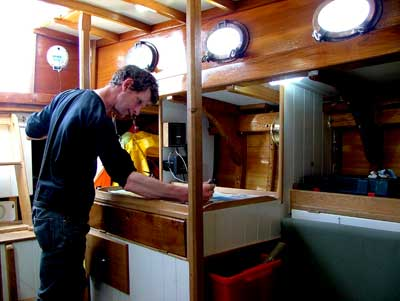My first play with WordPress was a bit clumsy, I was used to Wordpress.com, but not a locally hosted version working directly with the files. After deciding that the Skeleton theme wasn't for me, I installed an even more basic theme, Starkers, and ended up with this very basic layout.
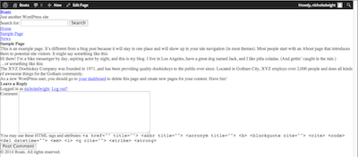The first thing I knew I would need, before changing anything about it or learning about anything else in WordPress, a menu/navigation. So, I went through the files externally, in Atom (so any changes could be saved/recovered with git locally), and found how to insert a navigation. Then I found on WordPress where to add in extra links in the menu bar.
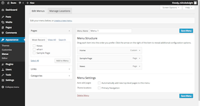As mentioned before, I found that changing the files through WordPress directly could potentially be hazardous, especially since I'm usually so indecisive when it comes to websites. Therefore, I'm working locally in Atom, a new text editor by Github, and commiting any changes to git, to keep everything safe and organised.
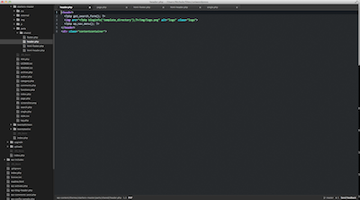For the requirements gathering for the client site, I went through different aspects of what the client wants for the future site, what the current one lacks and does for the viewers, and what the clients of Tim Loftus' Boats would want to see in the site.
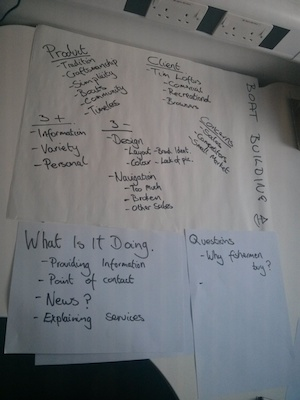I found that Tim's client is based off recreational buyers, around 40 years of age and older, and commercial buyers which consist mainly of fishermen and the families of such. Now that he has moved his business to England, his main clients come from the recreational buyers, however, he can't disregard the commercial buyers when it comes to the feel of the site.
When discussing the requirements with Tim, he said he wanted the site to have a warm, local, and friendly feel which makes sense with the product, wooden boats. Since the client base is so limited for handmade boat builders, there's a lot of passion put into each, this also needs to be translated into the website.
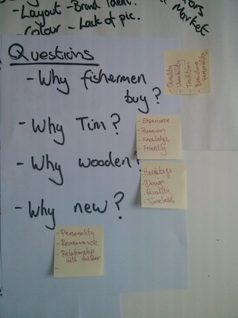When questioning myself as to why would 'I' buy a boat from Tim Loftus over other boat builders, I came up with some answers. He has experience, passion, and knowledge. Why new and wooden boats? - They're a part of a heritage, tradition; they've quality, personality, timeless, and there's a close personal relationship built with the builders, this all needs to be translated to the viewers of the website. Seeing all this could bring in more clients for Tim and boost his business.
Overall, the majority of his, and other builders, clients hear about the business via word of mouth, so this had me questioning the necessity of a website in general. However, we are entering a digital era, which means people prefer to check up on various aspects of their life, things they want to buy, etc, online. So when they hear of Tim Loftus' business, they can be greeted online with a professional, up to date, informative website. With the current site, it almost looks as if Tim has gone out of business since the site is so dated.
First of all, the colour scheme of the site needs to change, it currently feels so cold.
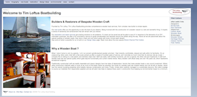The blue gradient is so dated as well and makes me think of a powerpoint presentation from middle school.
The logo also needs to be larger, if not redone, and placed in the left-hand upper corner where most logos are found. The navigation appears to be straight forward, but going through it I found that not only are there extraneous buttons/links, but that makes it confusing and difficult to find what you want.
The contact page needs to have some sort of price guide, given each boat is different and it depends on the economy, a rough guide for new boat buyers would be really helpful. Redoing the layout and putting all the contact information together would also give the site a more professional feel.
Lastly, the layout in general needs to go. Handmade wooden boats require creativity, experience, and love. The site needs the same, it needs to essentially reflect a boat; organic, warm, quality. These are the aspects I'll be trying to reproduce in the new site.
Above is the inital wireframe I did for the client site, it was rather rough, but allowed for the site to have an open and friendly feel to it. It felt very modern, and professional.
This is the second wireframe I'm thinking of developing further. It would have a gorgeous design when you first enter the website, it'd be a beautiful HD image of water with the curve of the front of a wooden boat matching the curve of the navigation. I considered using JavaScript to move the navigation into a list formation on the left of the screen for the other pages, however, one thing to keep consistent in a website is the navigation. So although this would be a pretty and very fun website to create, it doesn't really fit what the client needs.
This is the mockup for the original, functional, wireframe. It's changed a bit from the mockup in that I removed the 'featured projects' section, since it's essentially the News link. Instead I've provided a footer with contact information, and a link to the contact page, along with a section for the latest articles and posts directly from the built-in WordPress blog. After taking a closer look at Tim's current website, there is more 'About' information than expected, and therefore there's an introduction to the company on the homepage, and there will be more personal information about Tim and his boat history on the About page linked in the navigation bar.
The header image also contains contact information in it, since it would be the main form of contact to get ahold of Tim, this just makes him very accessible to the potential customer. The logo has also been changed to a simple silhouette of a sailboat, it's only temporary but in my opinion, the current logo needs to be updated.
The sizing of the mockup provided is much smaller, when greeted on the homepage, the viewer would see the header image, navigation, and a little bit of the content on the page. It's aesthetically pleasing and looks like it's well looked after therefore would hopefully encourage more buisiness for Tim.
I decided to implement the functional wireframe, the one that has the mockup and wooden texture. I chose this one because when it came down to having a decent business related website, it couldn't be all fun and games, which the second wireframe was. This one didn't have inconsistencies and provided a legible viewing experience and easily accessible content.
1) To start off with implementing my design idea, as stated before, I chose to use Starkers theme instead of Skeleton, I felt this was a better jumpoff point, it took out everything unnecessary and is much easier to edit. This is what the site looked like with minimal content, just half a menu bar, header, sample page content, and comments.
2) After working with WordPress for a while, trying out various edits. I stuck with my initial thought that editing my non-content changes to the site in Atom would be a safer way to go, rather than editing in WordPress itself. I also am much more adjusted to working with code on a darker background, as seen below in Atom with my personal preferences
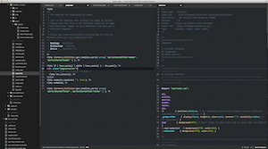3) Whereas here in WordPress, it's placed ontop of a white background. The layout of editing in Wordpress also throws me off, the files aren't where I'd expect them to be, to the left or in a tab at the top. Either way, I edited the theme-based changes in Atom and the content related ones in WordPress itself.
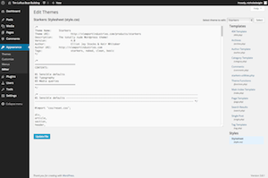4) Once I'd thrown on the background image, which was taken from Molesser Mastiffs, there was an empty space at the top of the header where I intended to put the logo, company name, and some contact information. However, I decided to make all this an image in Photoshop. I mainly did this to make my job easier, however, I do acknowledge that having the contact information an image is hindering viewers to quickly copy paste it in an email or make a note of it digitally. This can easily be changed if the site is to be implemented live.
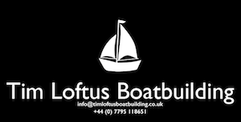5) Starkers theme gave me a very basic layout to work with, so it was rather easy to throw a background image in, and adjust the nav bar to inline-block with some css styling to make it somewhat appealing for now. All that was left was to add in styling for the content blocks, which I chose to be just a white page, that way no matter what Tim wants to put in his site, content-wise, it can look good and provide the viewer with any information he desires. Below you can see what the site looked like after editing the header, nav, where the content would be placed(entered via the Pages on WP directly), and footer.
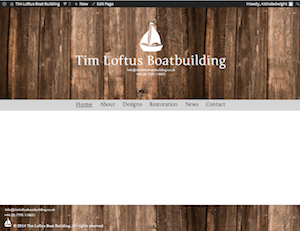6) Below is a screenshow of my workflow for this project, working alongside inspect element lets me make changes to my site without the commitment of editing the actual files. Inspect element proved to be more valuable than usual, since the source files don't contain the content on WordPress, therefore when I wanted to add in a container around the page content to provide some padding and extra styling, I was lost! I didn't know where to go, having never worked with WordPress before. But inspect element showed me exactly where in the html what I wanted was, and I was able to go to page.php and toss the title(which has been commented out since it's repetitive of the nav titles) and content into a container.
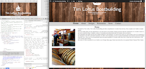7) When I do want to keep the changes I've made, I use version control via Git. This way if I ever want to go back to a previous version, I can. I can also make various branches to test 'crazy' ideas without harming the master branch, if I choose to implement those, I can. Git's amazing.
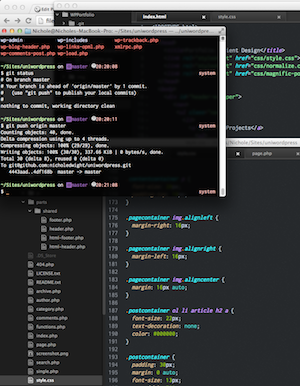8) Overall, the implementation of the overall grand design of the website was shockingly easier than expected, I was actually hoping for it to be more difficult. Once I found my footing in all the WordPress files, I was set on my way. After doing the basic styling of the site(header, footer, content/pagecontainer), there were lots of small issues that bothered me, so this is where the most of my time was spent; adjusting minor details to add to the overall appeal of the site. The first one I came across were the allowed tags for submitting a comment. I used inspect element to find where this was and what class it was in, I was then able to use CSS to hide them. They didn't seem very useful for a commenter and in my experience in looking at blogs, I haven't seen them in the commenting section, plus they aren't the nicest thing to look at when viewing a site.
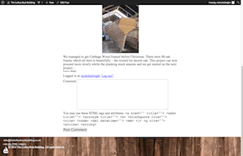9) The screenshot below is where I came across the need for the content/page container that I've so vehemently spoken about already. I called it a page container in my CSS, but it's really containing the content of my page. I'd been silly and styled my homepage using two column divs already, but when it came to putting in content for the Design Idea page, I found that wouldn't work and that the content stretched the whole width and touched the bottom of the container. It did not look good. This is when I went digging and found that I could contain the title and content, so I did. I styled the pagecontainer to have the CORRECT padding, margin, overflow, and max-width so that the content resizes with different screen sizes. I also adjusted the reading length, if the lines of text were too long it wouldn't be a pleasant or ideal reading experience for the viewer, a lot of sites make the mistake of not paying attention to this and when resized to a larger screen, it's too long and I, personally, would lose interest and navigate away.
This was a good example of learning on the fly for me, it didn't hit me straight away how to fix my issues. Designs never turn out exactly how you want them straight off the bat, it takes lots of tweaking. Nice and simple and it did exactly what I was hoping for. I then scurried off to change the sillyness on the homepage styling so that it fit the new styling of the pagecontainer.
10) Below is the result of the page container styling! It's also where I made a change to the original wireframe that's located in the Design Exercise above. Initially I was thinking of laying out the images of the various boats like you would see when buying something on Amazon. In rows and columns, clicking on them would bring the viewer to a new page with information all about that boat design. This would've been a good idea I think, however, there isn't too much information on the boats on the original site Tim has. Therefore it seemed like a waste of time and space. It can be implemented should it be desired, however, this was just my opinion that mattered at this time, so I adopted the layout that's already on his original site. It's simple and to the point, however not very aesthetically pleasing and could be worked on.
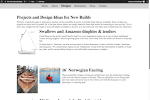11) The footer has also changed from the original wireframe, instead of linking in the latest posts from the news/blog page, it just has the logo, some contact information(again, as images, which can and probably will be changed if implemented), and copyright text. The screenshot doesn't show it as well as when I was looking at it on my screen, but the white copyright text encroaches onto part of the wooden background that makes it hard to read. Although it's a small issue, everything needs to be addressed, so I gave it a slight textshadow for legibility.
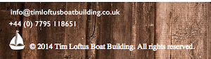12) Once the site design was nearing the end of development, I decided the fonts needed to go. It didn't match the overall feel and intent of the boat site. So I found a font that felt more old-school, more like something you'd see in a boat yard, Junge. Once I'd decided on that font, it was necessary to go back to the header logo image and change the font there. After having lost how to get the site title back in the PHP, I decided that changing the font in Photoshop would suit the need to show the client the design of the site and that the site title can be retrieved given more time were the client to like this design.
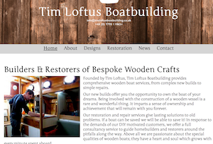13) The final stage to presenting the design in some live pages was to add content to the Post/News page. I did this by taking posts he currently has on his site and integrating them into the WordPress site I've built. I included just enough to give the idea of how it would look with all his posts imported into it. Of course, there isn't an archive section on the right with all the post history, since I'd only just put the first post in in early March.
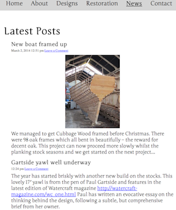14) When it came to moving my project from my local machine to the UNIX servers at uni, again, I used GitHub. I'm still not sure what happened, I think it had to do with file permissions, but when I pulled it off GitHub using PuTTY (since the uni computers don't have Terminal) the theme appeared like it should. However, when I went to import the content I'd created locally, WordPress couldn't make a folder for installing the importer. So I tried to do it manually, I came across issue after issue. I'd gotten all the text into the site and needed to add the media, they couldn't be uploaded! The only error I got was that they "couldn't be moved to wp-content/uploads/2014/03". I went hunting on the internet to find other people with the same issues but to no avail. I settled on looking at various file permissions on the uploads folder. It finally worked and I was able to upload all the content into the page manually. I'd like to work with WordPress again locally to see if the same issue crops up when moving it to the uni server again.

Nichole is an American expat, more precisely, hailing from Nebraska before later moving to Georgia, and has managed to cross the Atlantic to escape the sweltering clutches of the southern states. While she has acclimatised to Britain extremely well, her work still has a certain American touch. This doesn't mean there are bald eagles and stars 'n' stripes plastered all across her work, but there's undeniably that gregarious yet professional flair embedded in everything she touches-like an American Midas.
She is a polyglot both with human and programming languages, Nichole speaks English, German, and a tiny bit of Italian and Norwegian; as well as Python, Ruby, PHP, HTML, CSS, and JavaScript, although she would definitely bring Python to a keyboard shootout. Studying Digital Media in her quest to be a true multimedia hybrid, she also has a new-found adoration of 3D-modelling and visual design.
When not doing any of the above, she can be found around a table trying her very hardest at board games, looking at cat pictures on the internet, passionately arguing why Matt Smith is by far the best Doctor, or winding down with a video game or five.
{kind=link}
{kind=link}
{kind=link}
{kind=link}
{kind=link}
{kind=link}
{kind=link}
{kind=link}
{kind=link}
{kind=link}
{kind=link}
{kind=link}
{kind=link}
{kind=link}
{kind=link}
{kind=link}
{kind=link}
{kind=link}
{kind=link}